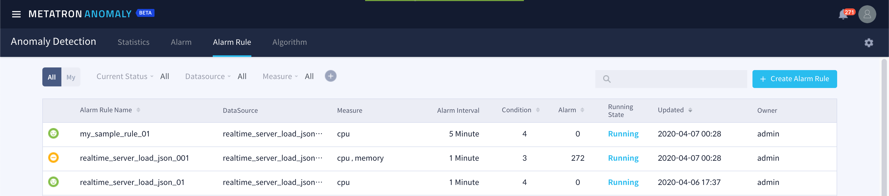

Viewing and modifying alarm rule details¶
Alarm Rule tab menu allows you to view and modify registered alarm rules. In addition, in this menu, you can easily grasp the status of data abnormal scores calculated according to the selected prediction model.
The alarm rule menu consists of the following two pages.
Alarm Rule List¶
When entering the Alarm Rule tab, the currently registered alarm rules are listed and displayed.

The information displayed in the list is as follows, and you can filter or search the rules to list based on this.
Current Status: Monitoring result status according to the rule
Alarm Rule Name: Rule names
DataSource: Data sources being monitored
Measure: Measure columns being monitored
Alarm Interval: Alarm generation time interval
Condition: The number of alarm occurrence conditions applied to the rule
Alarm: Number of alarms triggered by the rule
Running: Whether the rule is running or not
Updated: Time and user who last updated the rule
Owner: User who created the rule
Alarm Rule Details¶
If you select one of the alarm rule list items, you can view detailed information about the alarm rule and modify some settings. On the left side of the screen, the monitoring status is visualized and the alarm rule condition setting value is displayed on the right side.

The monitoring period setting value displayed on the screen is displayed at the top of the monitoring status area. You can change the period setting value by clicking the  icon.
icon.

In the condition area on the right, you can adjust the overall settings of the rule.
Alarm Start: Time to start checking for alarms
Alarm Interval: Period to check alarm occurrence conditions
Running State: Whether the alarm rule condition is being checked (running) or not (stopped)

If you click the icon to the right of Subscribers, you can add / change subscribers of the corresponding alarm rule.

Metatron Anomaly provides Post Processing that can be configured to take additional action when an alarm occurs due to the rule. Post processing currently provides two functions.
Script Execution: Register and run a shell script행
Additional Chart: Expose table chart to alarm details

In addition, the existing alarm occurrence condition can be modified. See: ref: alarm_rule_settings for more information.

If you click the  button at the right end, the Conditions panel will switch to the Alarm History panel to show the alarm history that has occurred so far (again, press the
button at the right end, the Conditions panel will switch to the Alarm History panel to show the alarm history that has occurred so far (again, press the  button to go back to the Conditions panel).
button to go back to the Conditions panel).